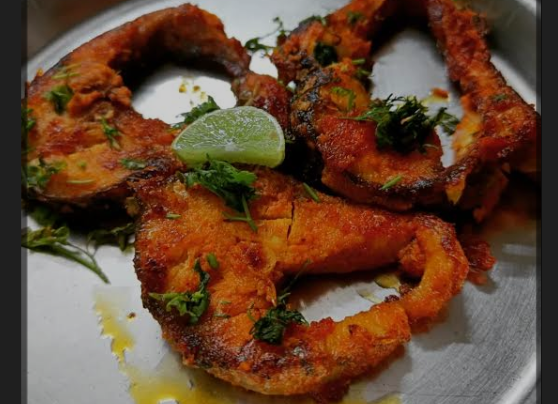

Briyani
.png)
Chicken is a famous South Asian dish made with basmati rice, meat (chicken, mutton, fish, prawn, or egg), aromatic spices, and herbs. It is known for its rich flavor, fragrance, and colorful appearance. Originated from Persian cuisine, brought to India by the Mughals, and now has many regional styles.
Roti with salna
Main dish
.png)
Flatbreads: Appears to be Roti or Chapati alongside a thicker, possibly millet-based flatbread like Bhakri. Curries: Two distinct curries are visible. One is a reddish, oil-rich preparation with what looks like meat pieces, potentially a Kolhapuri Mutton Rassa (like Tambda Rassa). The other, in a separate bowl, also appears to be in India.
chicken kabab
Main dish
.png)
Non-vegetarian food contains meat, and sometimes, eggs. The term is common in India, but not usual elsewhere. In the generally vegetarian environment of India, restaurants offering meat and fish usually have a "non-vegetarian" section of their menu, and may include the term in their name-boards and advertising.
Fish fry
Main dish
often using traditional techniques and regional ingredients; Bengali Style Hilsa: A variation, Kumro Patai Ilish, is cooked steamed inside a pumpkin leaf. ad cuisine of Tamil Nadu, this dish features kingfish (Surmai) marinated in fiery spices and fried until crispy.
Chicken 65
Main dish
.png)
Butter Chicken (Murgh Makhani): This classic North Indian dish features succulent pieces of marinated and roasted chicken cooked in a rich, creamy, and mildly spiced tomato-butter gravy. It is often served with naan or rice. Chicken Chettinad: A fiery and fragrant dish from the Chettinad region of South India.
Mutton Gravy
Main dish
.png)
In the generally vegetarian environment of India, restaurants offering meat and fish usually have a "non-vegetarian" section of their menu, and may include the term in their name-boards and advertising.